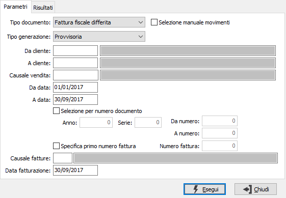
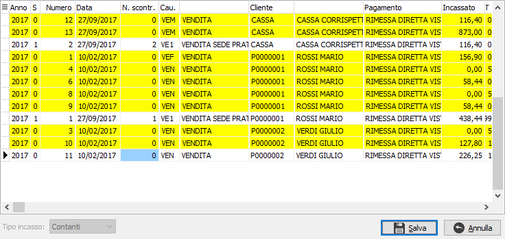
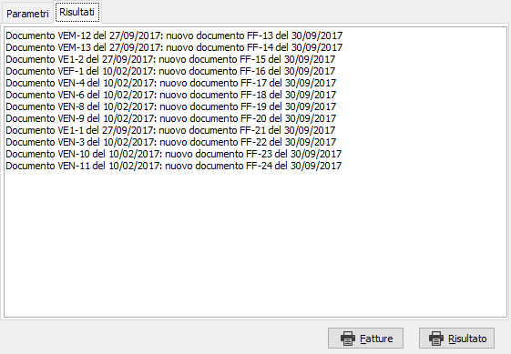

Generazione fatture
Il programma effettua la generazione delle ricevute/fatture fiscali o fatture di vendita, provvisoria o definitiva, utilizzando i dati dei documenti di vendita esistenti in archivio in base ai parametri inseriti dall’utente.

TIPO DOCUMENTO: definisce se si devono generare fatture fiscali, immediate o differite, ricevute fiscali o fatture di vendita. In base a questo campo sarà considerata una delle causali di ricevute/fatture fiscali o la causale di fattura di vendita presenti nelle causali dei movimenti di vendita.
SELEZIONE MANUALE MOVIMENTI: se si appone la spunta a questa casella, sarà compito dell'utente selezionare manualmente i movimenti da fatturare da un elenco tramite la seguente finestra che compare dopo la pressione del pulsante Esegui.

La finestra presenta i movimenti che sarebbero da fatturare, già selezionati, in base ai parametri inseriti e consente di selezionare e annullare la selezione con il doppio clic del mouse o tramite un menù richiamato dal pulsante destro del mouse. Se sono presenti movimenti di tipo interno sarà attivo il campo 'Tipo incasso' con cui è possibile selezionare il tipo incasso definitivo per i movimenti interni.
TIPO GENERAZIONE: definisce il tipo di operazione da compiere: provvisoria oppure definitiva. La generazione provvisoria può essere effettuata più volte e non aggiorna nessuna tabella, ma genera soltanto la stampa di un brogliaccio di fatturazione; la generazione definitiva aggiorna le tabelle e per annullarla è necessario seguire una specifica procedura ed è consigliabile contattare il servizio Assistenza.
DA CLIENTE: codice del cliente, presente in anagrafica clienti, da cui si vuole iniziare la selezione. Confermando a vuoto, la selezione inizia dal primo cliente valido. Sul campo sono attive le funzioni di ricerca (F9).
A CLIENTE: codice del cliente, presente in anagrafica clienti, con cui si vuole terminare la selezione. Confermando a vuoto, la selezione termina con l'ultimo cliente valido. Sul campo sono attive le funzioni di ricerca (F9).
CAUSALE VENDITA: codice della causale di vendita per cui si vuole effettuare la selezione. Confermando a vuoto vengono considerate valide tutte le causali. Sul campo sono attive le funzioni di ricerca (F9).
DA DATA: eventuale data del documento da cui deve iniziare l'elaborazione dei documenti relativamente ai precedenti parametri inseriti. Confermando a vuoto, la selezione inizia con il primo documento valido.
A DATA: eventuale data del documento con cui si desidera terminare l’elaborazione dei documenti relativamente ai precedenti parametri inseriti. Confermando a vuoto, la selezione si conclude con l'ultimo documento valido.
SELEZIONE PER NUMERO DOCUMENTO: check box che abilita i campi sottostanti per effettuare la selezione dei documenti per numero (casella con segno di spunta).
ANNO/SERIE/DA NUMERO/A NUMERO: campi abilitati solo se la casella precedente è spuntata; consentono di specificare i limiti di selezione per anno, serie e numero dei documenti di vendita da considerare per la generazione delle ricevute/fatture fiscali.
SPECIFICA PRIMO NUMERO FATTURA: check box che abilita il campo successivo per specificare il numero con cui dovrà iniziare la fatturazione, casella con segno di spunta.
NUMERO FATTURA: campo abilitato solo se la casella precedente è spuntata; consente di inserire il numero con cui iniziare la fatturazione.
CAUSALE FATTURE: codice della causale, presente nella tabella causali ricevute/fatture fiscali, riferita alla causale dei movimenti di vendita, con cui si vuole effettuare la generazione delle ricevute/fatture fiscali. Confermando a vuoto non sarà effettuato nessun controllo sulle causali ricevute/fatture fiscali presenti nelle causali di vendita. Sul campo sono attive le funzioni di ricerca (F9).
DATA FATTURAZIONE: indica la data con cui deve essere effettuata la fatturazione. Nel caso in cui questa data sia precedente a quella indicata nel campo "a data" saranno considerati solo i documenti fino alla data fatturazione.
La pressione sul pulsante Esegui determina l'inizio dell'elaborazione dei documenti. Il risultato viene visualizzato nella pagina 'Risultati'.

Nella pagina vengono visualizzati i risultati dell'elaborazione; qui vengono indicati i documenti generati, se si sono verificati errori o ci sono dati non corretti nei documenti elaborati, viene indicato in questa sezione. La pagina dei risultati può essere stampata utilizzando l'apposito pulsante Risultato.
Con il pulsante Fatture può essere eseguita direttamente la stampa dei documenti generati, se non ci sono stati errori; se la generazione è provvisoria, la stampa sarà annullata dalla dicitura "Fatturazione provvisoria".